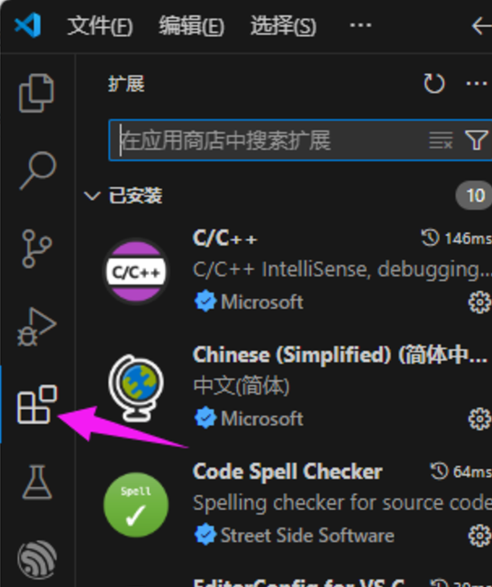
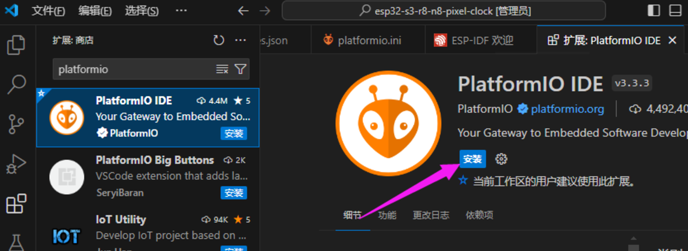
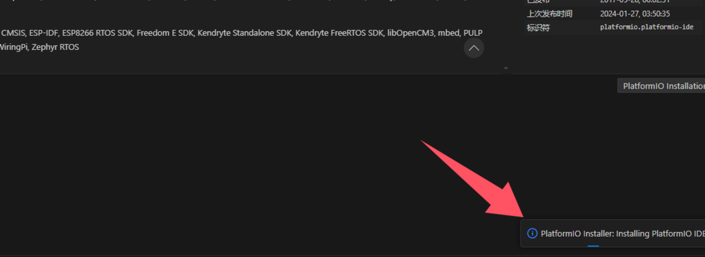
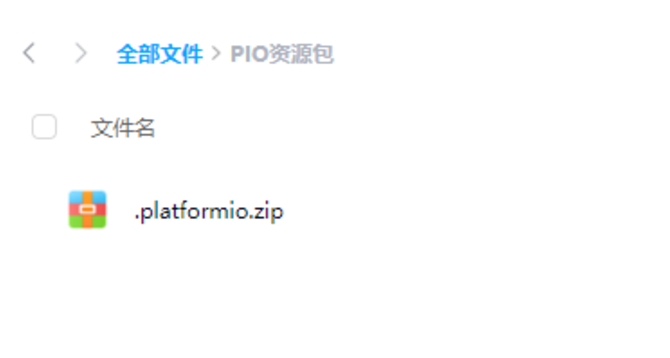
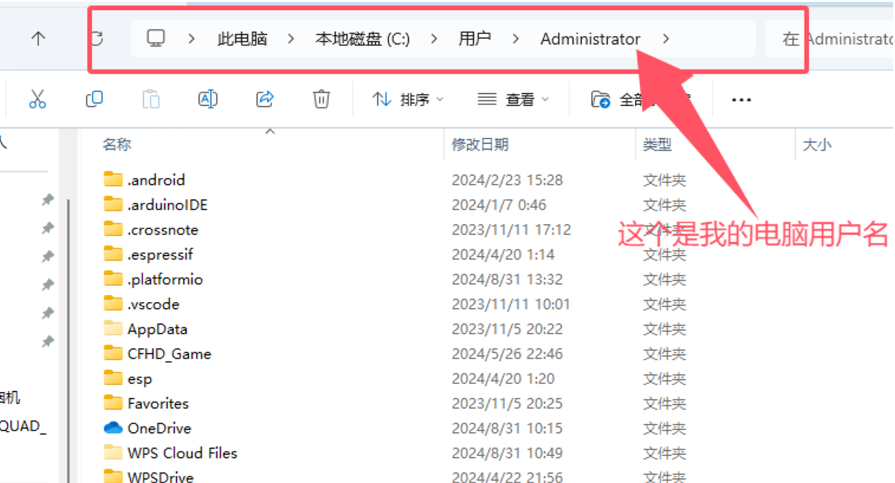
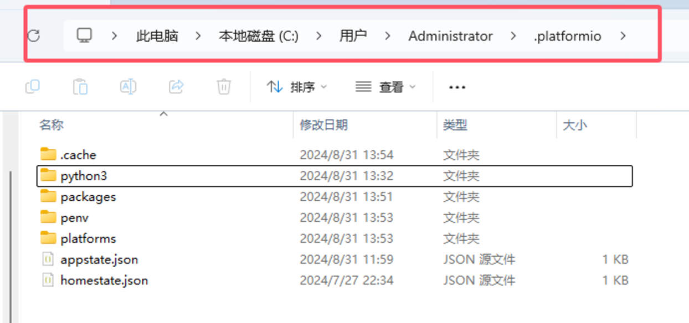
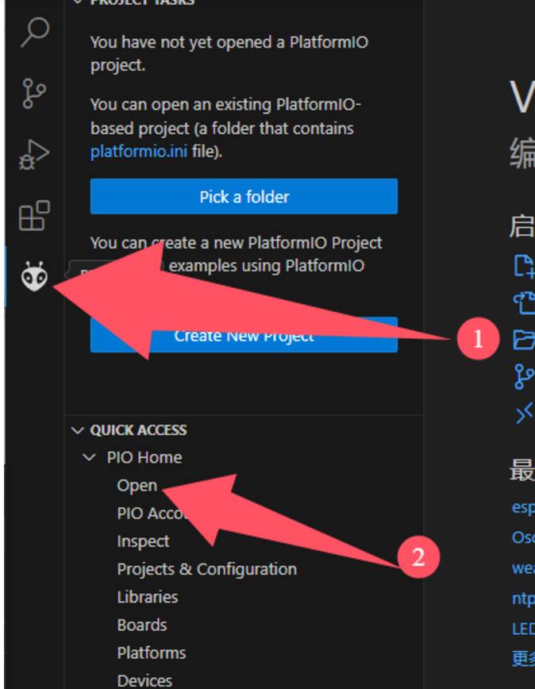
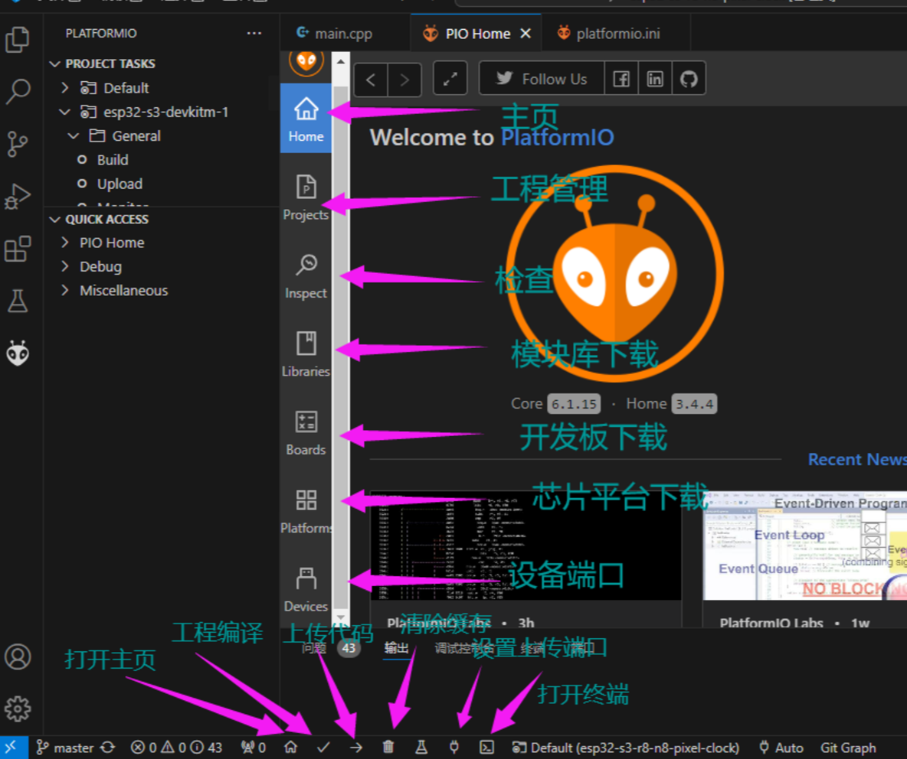

像素时钟环境搭建
2024-12-05
Update history
| Date | Version | Author | Update content |
|---|---|---|---|
| 2024-12-05 | 1.0.1 | 老怪鸽 | 更新了基本文档 |
安装VScode
安装的步骤网络上多的很，这里不再介绍。
VSCode安装PlatformIO扩展
打开VSCode的扩展安装。

搜索platformio并进行安装。

如果是第一次安装，通常是需要魔法的，毕竟服务器在海外。
离线安装PIO
当点击安装时，PIO就会去github上安装对应的资源，但是github还是有很多人不知道怎么上，也不知道怎么开魔法，所以当出现下图中的提示时，马上关闭VSCode。

这里提供一个PIO离线的资料包，
通过网盘分享的文件：PIO资源包
链接: https://pan.baidu.com/s/1n0lSM8ngeu1Wt5uJzMze-A 提取码: LGGA

去到C盘自己的电脑用户名下：

将百度网盘中下载的 .platformio.zip解压到你的电脑用户名文件夹下替换。替换完成后，.platformio文件夹中全部的文件如下：
注意别搞错了，是将百度网盘中的内容解压到电脑用户名下替换，不要再嵌套一个.platformio文件夹。

PlatformIO介绍
打开VSCode，打开我们刚才安装的PIO.

界面的介绍：

那么这里安装就完成了。